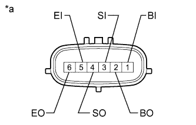

ULTRASONIC SENSOR (for Rear) > INSPECTION |
| 1. INSPECT NO. 1 ULTRASONIC SENSOR |
|  |
Measure the resistance according to the value(s) in the table below.
| Tester Connection | Condition | Specified Condition |
| 1 (BI) - 5 (EI) | Always | 10 kΩ or higher |
| 1 (BI) - 2 (BO) | Always | 10 kΩ or higher |
| 3 (SI) - 4 (SO) | Always | Below 1 Ω |
| 5 (EI) - 6 (EO) | Always | Below 1 Ω |
| *a | Component without harness connected (No. 1 Ultrasonic Sensor) |